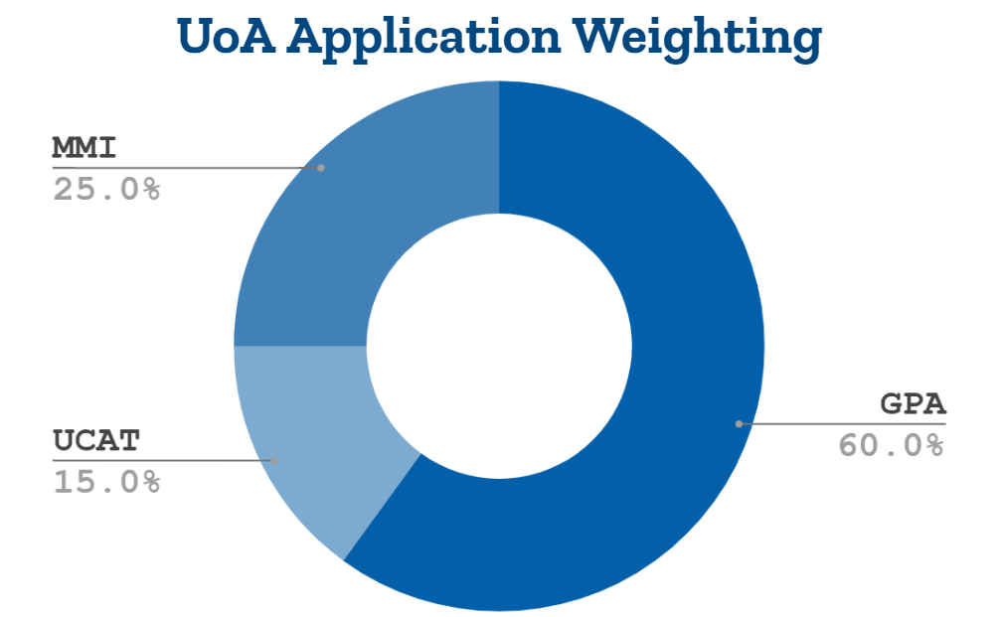

This website actually has nothing to do with that, but I wanted to put that there.
Now onto the actual website!
People hear about medical school and instantly think that it’s difficult and time-consuming; but what do you truly know about getting into medical school?
If you’re a medical student in New Zealand, there are a couple choices you can make about going to medical school; the main one being “Which one do I want to go to?”. In New Zealand, there are only two universities that offer full medical courses; UoA and Otago. While those sound like limited options, and they are, New Zealand citizens actually are considered domestic students in Australia. This means that they can apply for study there without being an international student, or having to pay the extensive costs attached with it.
For now I’ll start with the motherland. As I said before, New Zealand has only 2 universities offering full medical programs; this makes the admission into Medical school pretty selective.
UoA has 2 main pathways into med, being Biomedical sciences and Health sciences; and while both are the same in terms of applying to medical school, they do have their differences elsewhere. Biomed is generally considered the more sciencey of the two, and health sciences is more focused on population health; so in biomed you would be doing more chemistry, biology, and physics, while in HealthSci you would be writing more papers and reports. Unlike UoA, Otago only has 1 entry to Medical school. The Health Sciences First Year program.
This programme only requires basic UE, with a rank score of 140 in NCEA level 3. UoA on the other hand has a bit more strict of entry requirements. HealthSci requires a rank score of 250, or 10 excellence credits and 70 merit questions, but along with it you need 18 credits in a science subject and an “english-rich” subject; an english rich subject is a subject such as english obviously, history, geography, classical studies, and art history. Some of these count as English-rich as they have a lot of papers and writing, even if not focused on English; you might, but likely aren’t, wondering why Psychology isn’t one of these. The answer is that I have no clue, I’ve tried to figure it out but it seems like it just doesn’t count for some reason. It’s possible if you took it it would count, as it counts for literacy credits, but it’s not worth it in my eyes to take the risk. Biomed on the other hand has a rank score of 280, which is around 40 excellence credits and 40 merit credits, but it also has no subject requirements and so can be taken with any level 3 subjects.
Onto the actual medical school portion of this website, which will ironically be the shortest since I wont be discussing the content of the program; this may seem contradictory but this website is about how to get into said program, not about it. WIth that cleared up let me introduce you to UoA and Otago Med!
For your application to UoA med, it is split into 3 different parts; your GPA, your UCAT score, and the MMI. Your GPA, or grade point average, is weighted at 60% of your application; your UCAT, or University Clinical Aptitude Test, makes up 15% of your application; and your MMI, or multi mini interviews, makes up 25%. The MMI is a series of 8 interviews that take 8 minutes each and one interviewer per station. If you’re confused about how the percentages work, here’s a visual chart to help. Your application is the total, and how well you did matters however large it plays a role in your application. The GPA required for UoA med is technically 6.0, or B+, but realistically you would need at least an 8.0, and still likely a 9.0, to be accepted. The UCAT score is out of 3600 points, so you’re obviously aiming for that, but realistically you would likely need to be in the top 20% of the people who took the UCAT’s scores. The MMI can’t really be explained in the same way as the other two but essentially they are trying to determine if you have the adequate skills and personality to become a good medical professional.
Otago is a different story to UoA, as your GPA makes up 100% of your admission weighting. Now while this may sound nice, it does put a lot more pressure on that GPA; even one bad paper could ruin your entire future. Along with the GPA, you must also get a score above a specific threshold on the UCAT. I couldn’t find a credible source but based on my research it would be around a 2500 or more score. There is no such interview in Otago as there is in UoA, which can be considered a relief for many, though this does once again have the drawback of putting great strain on your GPA.
There are quite a few reasons why students in New Zealand might wish to attend an Australian medical school:
11 more schools, meaning more chances (19 if you count undergraduate I suppose)
Experience of studying abroad
Higher international recognition
Quality of education (6.2x higher GDP)
5 years instead of 6 years (no premed)
Though, that's not to forget the reason why many people feel like they wouldn’t want to go to one:
Overseas and away from home and/or family
Australian Uni is often considered a bit harder
Can have some teaching methods abnormal to New Zealanders
No premed meaning no preperation for Medical School
It can be more expensive than NZ University
But that hardly matters if you can’t actually get into medical school, but how do you get into medical school?
For Australian medical school, the best information I can provide on how to get in is that you need a 99.95% ATAR, or Australian Tertiary Admission Rank, which is the equivalent of getting 90E credits. And getting a UCAT score of around 3000 or more, or around the top 10% of scores. Along with those requirements, various colleges require different subjects to be admissible. To reach the sufficient subject requirements for the most schools I would say that it would likely be in your best interest to pick Chemistry, Biology, a Math subject other than General mathematics; our school offers calculus and statistics, and an English rich subject like the ones listed earlier.
My personal preference for Medical School in NZ would be UoA, as it is in Auckland and would likely have more recognition than other universities, and it’s ranked higher than Otago in worldwide rankings. But for a great many people, Otago would be the preferred choice. And for others, Australia is the only choice they even want! My point is that there isn’t one right but a lot (mainly 3, but I digress) and most people will fit into at least one of them.